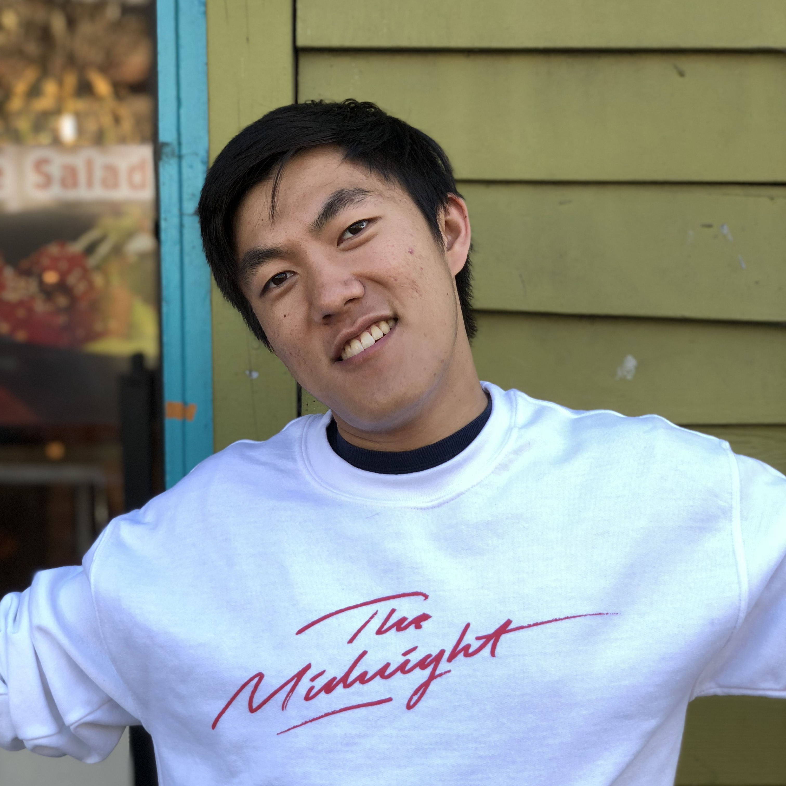

Dorian Chan
I'm a PhD student in the Computer Science Department at Carnegie Mellon University, where I currently work on computational imaging problems. I'm advised by Matthew P. O'Toole.
I'm also currently one of the department ombudspersons. Please feel free to reach out if there's anything you'd like to chat about!
I quite enjoy fishing. I'm also a big Denver Nuggets fan.
drop me a line: dychan@andrew.cmu.edu
Some of my past work:
My current research focuses on the applications of wave optics to computer vision problems. In the past, I've worked on non-line-of-sight imaging, HDR tonemapping, and reflectance capture.
Mark Sheinin, Dorian Chan, Matthew O'Toole, Srinivasa Narasimhan
CVPR 2022 - Oral, Best Paper Honorable Mention (~Top 2 paper)!!
Dorian Chan, Srinivasa Narasimhan, Matthew O'Toole
CVPR 2022
Mariko Isogawa, Dorian Yao Chan, Ye Yuan, Kris Kitani, Matthew O'Toole
ECCV 2020
Dorian Yao Chan, James F. O'Brien
SIGGRAPH'20 Posters - ACM Student Research Competition winner!!
Reza Abbasi-Asl, Mohammad Keshavarzi, Dorian Yao Chan
NER'19
Rachel A. Albert, Dorian Yao Chan, Dan B Goldman, James F. O'Brien
EGSR 2018